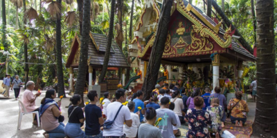
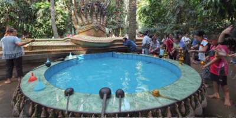
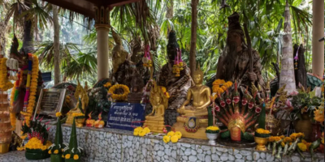

หน้าแรก ‚
พิพิธภัณฑบ้านเชียง ‚
ทะเลบัวแดง ‚
อุทยานประวัติศาสตร์ภูพระบาท ‚
วัดป่าภูก้อน ‚
วัดป่าคำชะโนด



❮
❯
คําชะโนด จ.อุดรธานี ถือเป็นสถานที่ท่องเที่ยวที่เต็มไปด้วยการเล่าขานตำนานลี้ลับอันโด่งดัง คําชะโนด (Kham Chanod) ตั้งอยู่ภายในพื้นที่ วัดศิริสุทโธคำชะโนด ตำบลวังทอง อำเภอบ้านดุง จังหวัดอุดรธานี สถานที่ศักดิ์สิทธิ์ที่ชาวบ้านทั้งในจังหวัดอุดรธานีและใกล้เคียงต่างให้ความเคารพและสักการะนับถือเป็นอย่างมาก เป็นสถานที่แห่งความเชื่อเรื่องพญานาค ซึ่งชาวบ้านต่างเชื่อกันว่าที่นี่เป็นที่อยู่อาศัยของพญานาค และเป็นทางเชื่อมต่อไปยังเมืองบาดาลได้ มีการปกครองรักษาโดยพญานาคราชปู่ศรีสุทโธ และองค์แม่ศรีปทุมมานาคราชเทวี ที่นี่ถูกปกคลุมด้วยผืนป่าต้นชะโนดขนาดใหญ่อยู่ทั่วบริเวณ ในพื้นที่ประมาณ 20 ไร่ ซึ่งแต่ละต้นล้วนมีอายุยาวนาน เป็นต้นไม้ที่แทบจะไม่มีในประเทศไทย ถือว่าที่นี่เป็นแห่งเดียวที่พบและมีประวัติศาสตร์ยาวนานมาจนถึงปัจจุบัน
ข้อมูลการติดต่อ
ที่อยู่:
บ้านโนนเมือง ตำบลบ้านม่วง อำเภอบ้านดุง จังหวัดอุดรธานี 41190
โทรศัพท์:
042-530-766
วันและเวลาทำการ:
เปิดทุกวัน เวลา 06.00–18.00 น.
ค่าเข้าชม:
เข้าชมฟรี
Facebook:
https://www.facebook.com/kamchanod/a>